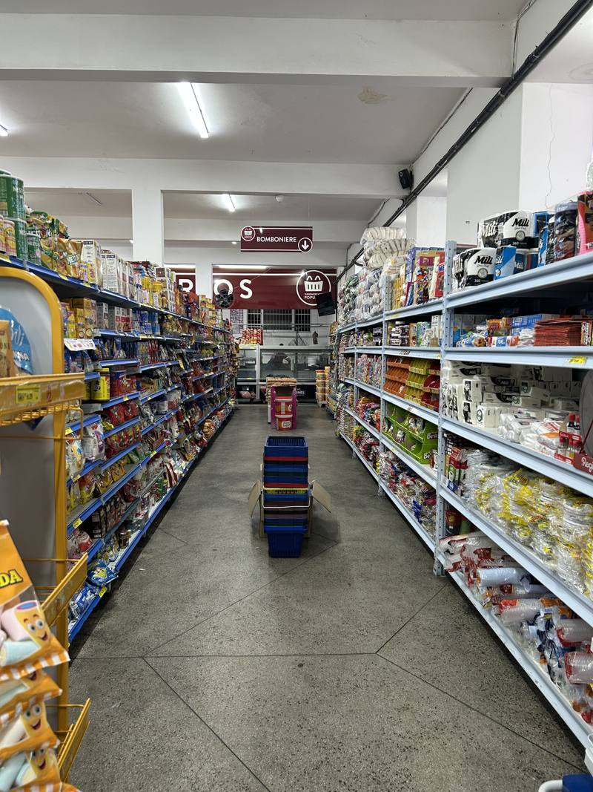
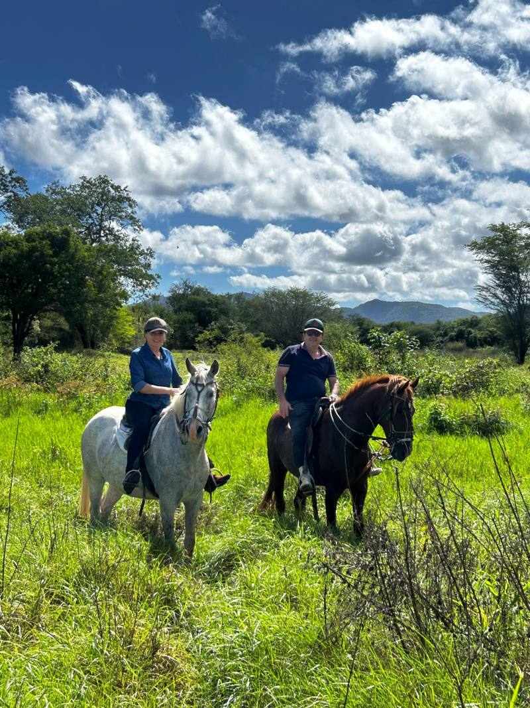
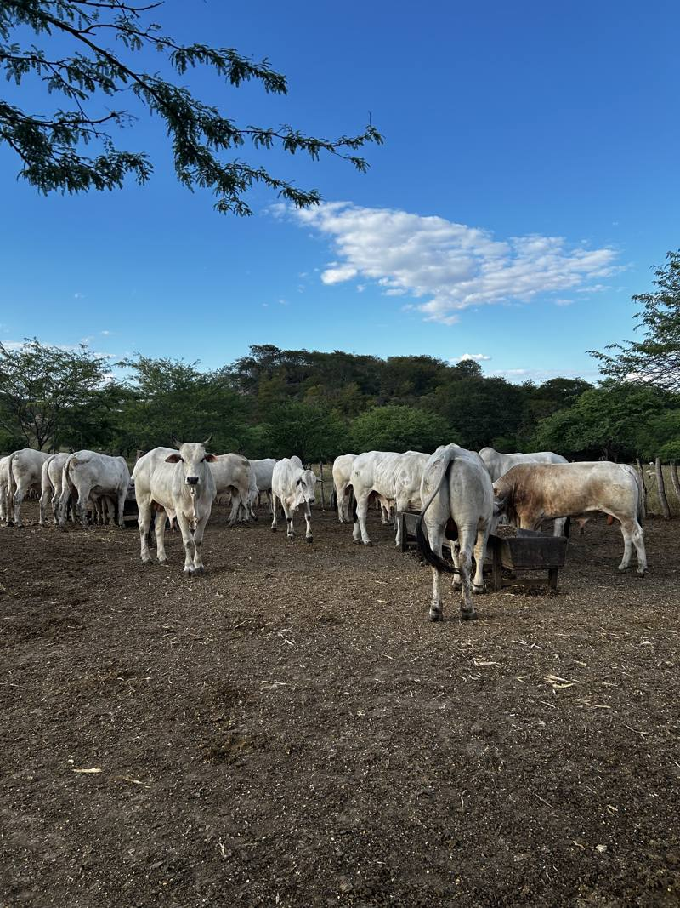

Entrega
Entrega grátis em Venturosa
Mande a lista pelo WhatsApp e a gente leva até sua casa.
Mandar minha listaVenturosa · PE · desde 2007
Mercearia, frios, bebidas, limpeza e um açougue com carne da nossa fazenda. Pediu pelo WhatsApp, a gente entrega de graça na cidade.
Seg a Sáb 06:30 às 19:00 · Dom 06:30 às 13:00



Açougue
A gente cria o boi, o porco e o frango que vende no balcão. Peça o corte que quiser na loja ou pelo WhatsApp.
Encomendar carneEntrega
Mande a lista pelo WhatsApp e a gente leva até sua casa.
Mandar minha listaPromoções
Siga a gente para ver os preços antes de vir à loja.
@supermercadopopulaarOnde fica
Em feriados o horário pode mudar. Confira no nosso Instagram.
Como chegar